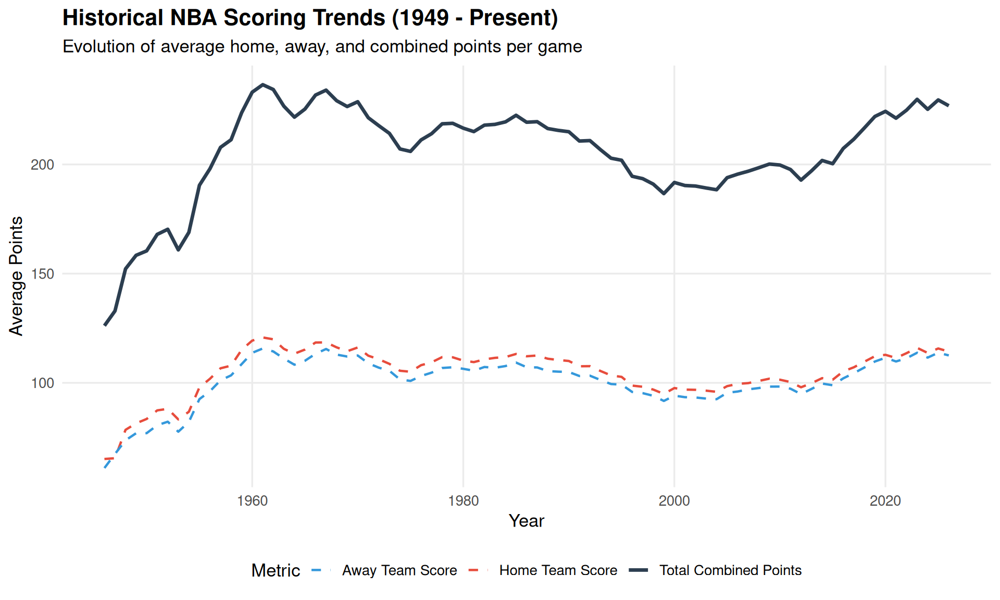
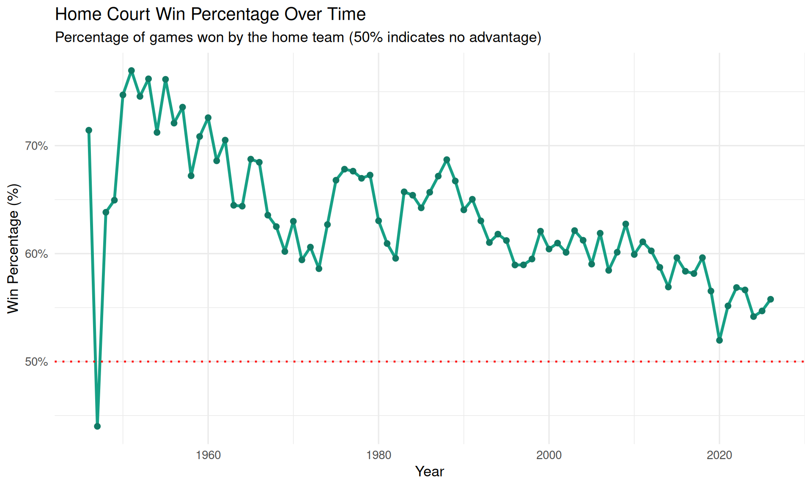
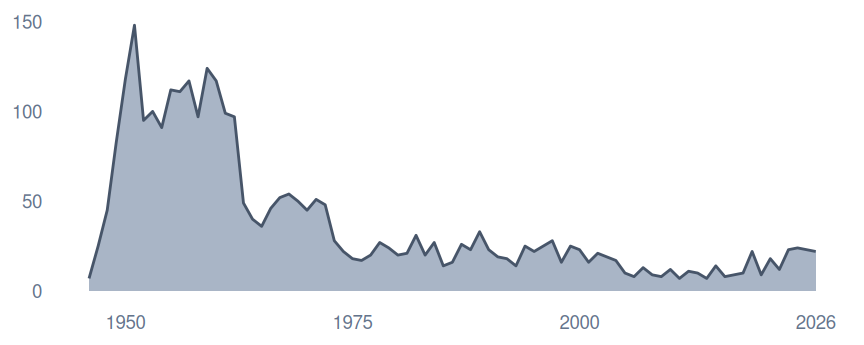
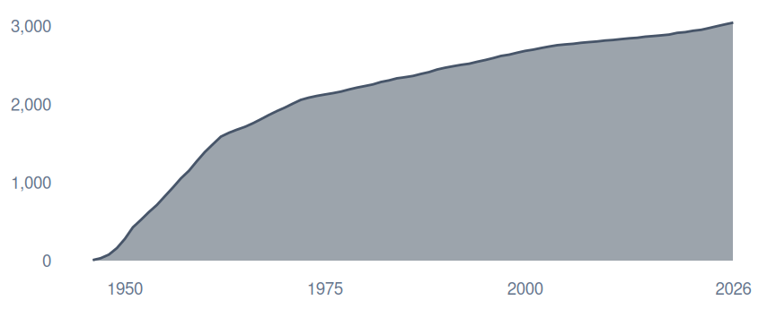

Code
library(readr)
library(dplyr)
library(ggplot2)
library(lubridate)
library(knitr)
library(scales)
# Read the dataset
games <- read_csv("Games.csv", show_col_types = FALSE)This report analyzes historical NBA game data loaded from Games.csv (derived from the Kaggle NBA Dataset: Box Scores and Stats). The dataset covers games from 1949 to the present, capturing team scores, game dates, locations, attendance, and matchups.
library(readr)
library(dplyr)
library(ggplot2)
library(lubridate)
library(knitr)
library(scales)
# Read the dataset
games <- read_csv("Games.csv", show_col_types = FALSE)Let’s look at the dimensions of the raw dataset:
dim_info <- tibble(
Metric = c("Total Games (Rows)", "Total Attributes (Columns)"),
Value = c(nrow(games), ncol(games))
)
kable(dim_info, caption = "Dataset Dimensions")| Metric | Value |
|---|---|
| Total Games (Rows) | 73279 |
| Total Attributes (Columns) | 23 |
Here is a summary of the columns present in the dataset:
cols_summary <- tibble(
ColumnName = names(games),
DataType = sapply(games, function(x) class(x)[1]),
SampleValue = sapply(games, function(x) as.character(x[1]))
)
kable(cols_summary, caption = "Column Meta-information")| ColumnName | DataType | SampleValue |
|---|---|---|
| gameId | numeric | 42500405 |
| gameDateTimeEst | POSIXct | 2026-06-13 20:30:00 |
| hometeamCity | character | San Antonio |
| hometeamName | character | Spurs |
| hometeamId | numeric | 1610612759 |
| awayteamCity | character | New York |
| awayteamName | character | Knicks |
| awayteamId | numeric | 1610612752 |
| homeScore | numeric | 90 |
| awayScore | numeric | 94 |
| winner | numeric | 1610612752 |
| gameType | character | Playoffs |
| gameSubtype | character | NA |
| gameLabel | character | NBA Finals |
| gameSubLabel | character | Game 5 |
| seriesGameNumber | character | Game 5 |
| attendance | numeric | 18984 |
| arenaId | numeric | 1000118 |
| arenaName | character | Frost Bank Center |
| arenaCity | character | San Antonio |
| arenaState | character | TX |
| officials | character | James Capers, Scott Foster, Mitchell Ervin, Tyler Ford |
| gameDate | POSIXct | 2026-06-13 20:30:00 |
# Clean and process the dataset, filtering out zero-score anomalies
games_clean <- games %>%
mutate(
gameDate = as.Date(gameDate),
homeScore = as.numeric(homeScore),
awayScore = as.numeric(awayScore),
winner = as.character(winner),
hometeamId = as.character(hometeamId),
awayteamId = as.character(awayteamId),
Year = year(gameDate)
) %>%
filter(!is.na(homeScore) & !is.na(awayScore) & !is.na(gameDate) & homeScore > 0 & awayScore > 0) %>%
mutate(
home_win = ifelse(winner == hometeamId, 1, 0),
total_score = homeScore + awayScore,
score_diff = homeScore - awayScore
)How has scoring evolved in the NBA over the decades? The plot below highlights the average combined score of games per year.
scoring_trend <- games_clean %>%
group_by(Year) %>%
summarise(
Avg_Total_Points = mean(total_score, na.rm = TRUE),
Avg_Home_Score = mean(homeScore, na.rm = TRUE),
Avg_Away_Score = mean(awayScore, na.rm = TRUE),
Game_Count = n()
)
ggplot(scoring_trend, aes(x = Year)) +
geom_line(aes(y = Avg_Total_Points, color = "Total Combined Points"), size = 1.2) +
geom_line(aes(y = Avg_Home_Score, color = "Home Team Score"), size = 0.8, linetype = "dashed") +
geom_line(aes(y = Avg_Away_Score, color = "Away Team Score"), size = 0.8, linetype = "dashed") +
scale_color_manual(values = c(
"Total Combined Points" = "#2c3e50",
"Home Team Score" = "#e74c3c",
"Away Team Score" = "#3498db"
)) +
theme_minimal(base_size = 13) +
theme(
legend.position = "bottom",
plot.title = element_text(face = "bold", size = 16),
panel.grid.minor = element_blank()
) +
labs(
title = "Historical NBA Scoring Trends (1949 - Present)",
subtitle = "Evolution of average home, away, and combined points per game",
x = "Year",
y = "Average Points",
color = "Metric"
)Warning: Using `size` aesthetic for lines was deprecated in ggplot2 3.4.0.
ℹ Please use `linewidth` instead.
We see a clear dip in the 1990s and early 2000s (often referred to as the “dead-ball” or defensive era) followed by a sharp rise starting around 2015 with the popularity of the three-point shot.
Is playing at home still a strong advantage? Let’s analyze the home-court win rate by year.
home_advantage <- games_clean %>%
group_by(Year) %>%
summarise(
Home_Win_Pct = mean(home_win, na.rm = TRUE) * 100
)
ggplot(home_advantage, aes(x = Year, y = Home_Win_Pct)) +
geom_line(color = "#16a085", size = 1.2) +
geom_point(color = "#117a65", size = 2) +
geom_hline(yintercept = 50, linetype = "dotted", color = "red", size = 0.8) +
theme_minimal(base_size = 13) +
labs(
title = "Home Court Win Percentage Over Time",
subtitle = "Percentage of games won by the home team (50% indicates no advantage)",
x = "Year",
y = "Win Percentage (%)"
) +
scale_y_continuous(labels = percent_format(scale = 1))
Historically, home-court win rates hovered around 60-70% in the early years but have steadily converged closer to 55-58% in recent seasons.
Let’s list the top 10 highest-scoring matches in NBA history contained within this dataset:
top_10 <- games_clean %>%
arrange(desc(total_score)) %>%
slice(1:10) %>%
select(gameDate, gameType, hometeamCity, hometeamName, homeScore, awayteamCity, awayteamName, awayScore, total_score)
kable(top_10, col.names = c("Date", "Type", "Home City", "Home Team", "Home Score", "Away City", "Away Team", "Away Score", "Total Score"), caption = "Top 10 Highest-Scoring NBA Games")| Date | Type | Home City | Home Team | Home Score | Away City | Away Team | Away Score | Total Score |
|---|---|---|---|---|---|---|---|---|
| 1983-12-13 | Regular Season | Denver | Nuggets | 184 | Detroit | Pistons | 186 | 370 |
| 2023-02-24 | Regular Season | Los Angeles | Clippers | 175 | Sacramento | Kings | 176 | 351 |
| 1982-03-06 | Regular Season | San Antonio | Spurs | 171 | Milwaukee | Bucks | 166 | 337 |
| 2019-03-01 | Regular Season | Atlanta | Hawks | 161 | Chicago | Bulls | 168 | 329 |
| 1990-11-02 | Regular Season | Denver | Nuggets | 158 | Golden State | Warriors | 162 | 320 |
| 2006-12-07 | Regular Season | New Jersey | Nets | 157 | Phoenix | Suns | 161 | 318 |
| 1984-01-11 | Regular Season | Denver | Nuggets | 163 | San Antonio | Spurs | 155 | 318 |
| 2019-10-30 | Regular Season | Washington | Wizards | 158 | Houston | Rockets | 159 | 317 |
| 1990-11-10 | Regular Season | Phoenix | Suns | 173 | Denver | Nuggets | 143 | 316 |
| 1970-03-12 | Regular Season | Cincinnati | Royals | 165 | San Diego | Rockets | 151 | 316 |
Which arenas have the highest average attendance historically (filtering for games that recorded attendance)?
top_arenas <- games_clean %>%
filter(!is.na(attendance) & attendance > 5000) %>%
group_by(arenaName, arenaCity, arenaState) %>%
summarise(
Games_Count = n(),
Avg_Attendance = mean(attendance),
Max_Attendance = max(attendance),
.groups = "drop"
) %>%
filter(Games_Count >= 20) %>%
arrange(desc(Avg_Attendance)) %>%
slice(1:10)
kable(top_arenas, col.names = c("Arena Name", "City", "State", "Games Recorded", "Avg Attendance", "Max Attendance"), caption = "Top 10 Arenas by Average Attendance (min. 20 games)")| Arena Name | City | State | Games Recorded | Avg Attendance | Max Attendance |
|---|---|---|---|---|---|
| United Center | Chicago | IL | 44 | 20109.18 | 22093 |
| Madison Square Garden | New York | NY | 52 | 19754.25 | 19812 |
| Ball Arena | Denver | CO | 45 | 19751.78 | 20046 |
| Kaseya Center | Miami | FL | 44 | 19701.43 | 20177 |
| Little Caesars Arena | Detroit | MI | 49 | 19543.29 | 20232 |
| Rocket Arena | Cleveland | OH | 52 | 19317.48 | 19432 |
| American Airlines Center | Dallas | TX | 42 | 19267.19 | 20232 |
| TD Garden | Boston | MA | 47 | 19155.89 | 19156 |
| Xfinity Mobile Arena | Philadelphia | PA | 49 | 19013.61 | 20431 |
| Scotiabank Arena | Toronto | ON | 46 | 18802.00 | 19919 |
The section below replicates the visual hierarchy and style of the NBA Scorigami reference poster (test_scores.png). It computes all stats dynamically and renders the two historical timeline insets and the main annotated Scorigami grid.
# Setup boundaries
min_s <- 15
max_s <- 192
# Calculate unique score counts and first occurrences
games_scores <- games_clean %>%
filter(homeScore >= min_s & homeScore <= max_s & awayScore >= min_s & awayScore <= max_s)
# Home/Visitor Scorigami Grid Data
home_visitor_scores <- games_scores %>%
group_by(homeScore, awayScore) %>%
summarise(
Count = n(),
First_Date = min(gameDate),
First_Home = first(hometeamName),
First_Away = first(awayteamName),
.groups = "drop"
)
# Calculate statistics over time for the mini-charts
games_timeline <- games_scores %>%
mutate(
w = pmax(homeScore, awayScore),
l = pmin(homeScore, awayScore),
score_key = paste(w, l, sep = "-")
)
score_firsts <- games_timeline %>%
group_by(score_key) %>%
summarise(first_date = min(gameDate), .groups = "drop") %>%
mutate(first_year = year(first_date))
new_scores_per_year <- score_firsts %>%
group_by(first_year) %>%
summarise(new_scores_count = n(), .groups = "drop")
stats_by_year <- tibble(Year = 1946:2026) %>%
left_join(new_scores_per_year, by = c("Year" = "first_year")) %>%
mutate(new_scores_count = coalesce(new_scores_count, 0)) %>%
mutate(cumulative_scores = cumsum(new_scores_count))
# Unique scores count in home-visitor coordinates
unique_hv_count <- nrow(home_visitor_scores)Scorigami in sport is a final score that has never happened before in a sport or league’s history. The poster below shows all unique scores in the NBA from 1946 to 2026.
DESIGN REFERENCE: Alex Varlamov
DATA: kaggle.com (Games.csv)
REPLICATED BY: Antigravity Pair Programmer
Unique Scores (H vs. V) 5119 Years: 1946 - 2026

